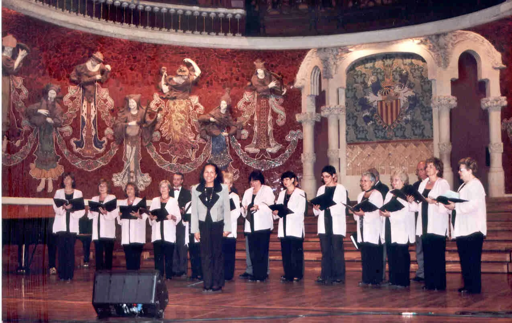

Coral Esperit Cantaire
Her first choir in Barcelona, in 1999. There were many experiences and concerts, both on their own and organised by the FCEC. Rehearsals were held in the theatre of the former Parish of Esperit Sant. With them she staged the Catalan zarzuela La Cançó d’Amor i de Guerra by Rafael Martínez Valls. To Carmen’s sadness, they decided to cease their activity in 2020.